|
２００５年１１月１９日、１年間で７つ続いた僕のラン企画もこれで最後。 いつも１年生を連れて一緒に走れたことが、僕の新歓部長として、誇れる１年間でした。 兄貴、オグ、パパ、やまけん、カズ、ハリー、大友氏、西尾さん・・・・たくさん来てくれてありがとね。 前回の「新緑の稲武＆矢作ラン」で連れて来れなかったもっちさんと一緒に走ること、 ずっとお世話になった先輩たちを恩返しの想いを込めて、僕がランに招待すること、 そして、この稲武の道の良さを後輩たちに受け継いでもらうことが、僕に託された使命でした。 これで僕の企画が最後なんだと思うと、自分でも悲しいくらいつらかった。 でも、すべてができたこのラン、速かったこの１年間の中でも、本当にいい思い出なんだ。 |
|---|
| 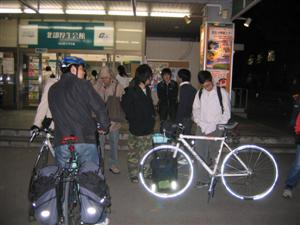 北部前から出発～！ 今回は元気な９人組が恵那まで。 思い出深い夜でした。 |
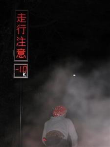 あぁぁぁ、寒いねぇ。 登坂がちょうど気持ちよがった♪ |
|---|---|
| 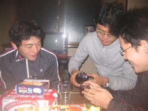 | 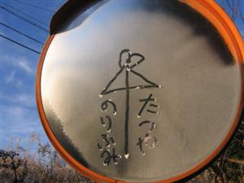 |
| GTOのおばあちゃんち到着！ 元気な子たちはボジョレぬ～ぼ～♪ |
寒っ～霜がはってるよ。 ん？近所のガキんちょの悪戯かな？ |
| 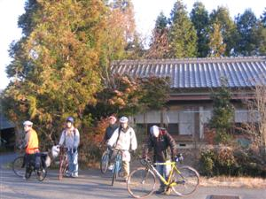 | 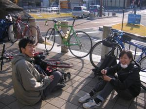 |
| 朝も７時半くらい。 最っ高に晴れて最っ高に気持ちいい！ |
朝からサプライズ足立さん！！ 西尾さんと最後の2shotなのかな･･･ |
 |
|
| チャリ部総勢２２人が恵那駅に集合！！ 忙しい中来てくれたたっちゃん＆●さん、ありがとう♪ 大友氏と大ちゃん、次の陽春ハリー's 稲武ラン企画でリベンジね。 |
|
| 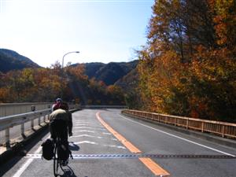 | 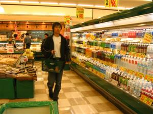 |
| うわー、懐かしい、この道半年ぶり。 前は深緑がきれいな頃だっけな。 |
いつものバローでいつもの買い物♪ オグさん、僕たちもう３回目なんですね。 |
| 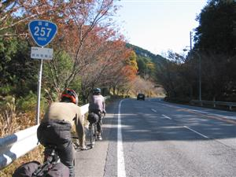 | 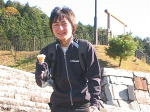 |
| 秋の道は涼しくていいです。 | ハリ～？まだアイスの季節かい？ |
| 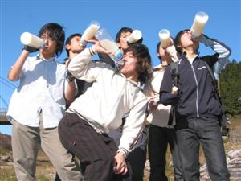 | 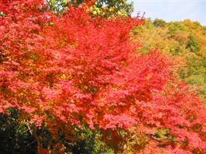 |
| 伝統！？恒例！？ ラフォーレでみんなでカルピスshot！ |
あぁー、もみじがきれー！ 黄色と赤が秋の青空に映えるなぁ。 |
| 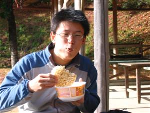 | 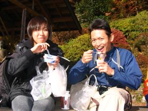 |
| 歴代の部長は、みんな変な人です。 GTOは、お湯なしカップ麺でご満悦♪ |
西尾さんとKen．さんの珍しいshot！ 先輩たち、来てくれて本当にありがとう。 |
| 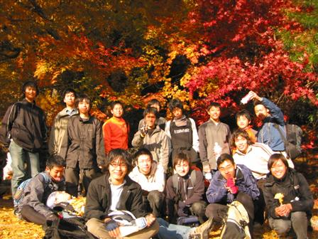 | |
| 大井平公園の紅葉が、うっとりしちゃうほど、きれいでした！ 僕、企画してよかった。何より、みんなに楽しんでもらえて本当によかったよ。 |
|
| 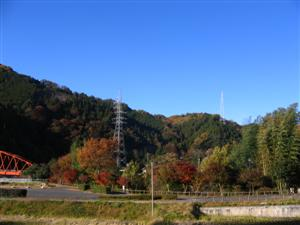 | 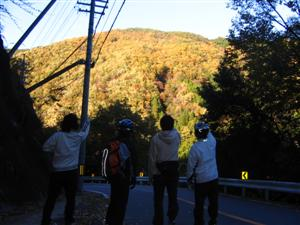 |
| 上矢作の街並みは、どことなく静か。 | あっ、山が夕陽に燃えてる・・・！ |
| 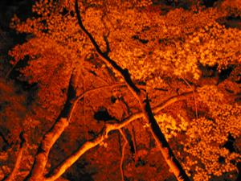 | 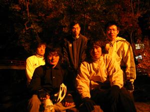 |
| おまけに香嵐渓のライトアップも。 | 今日は疲れたね、そろそろ帰ろっか。 |